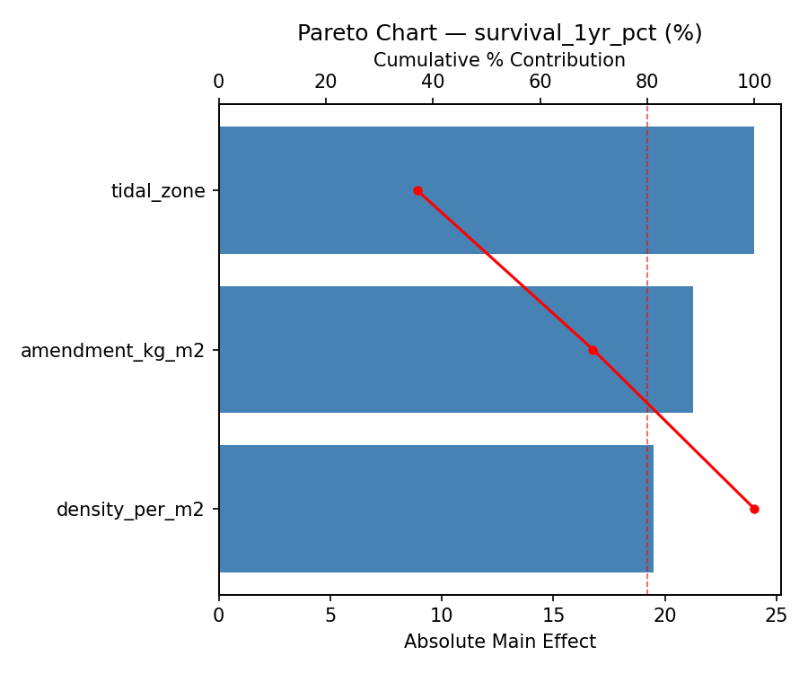
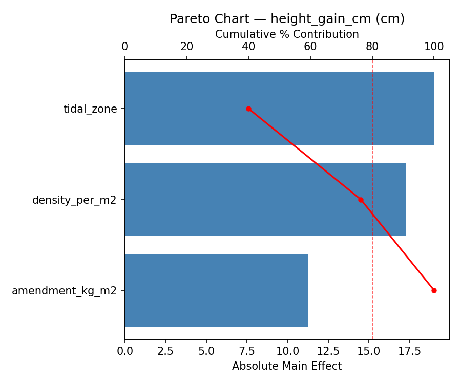
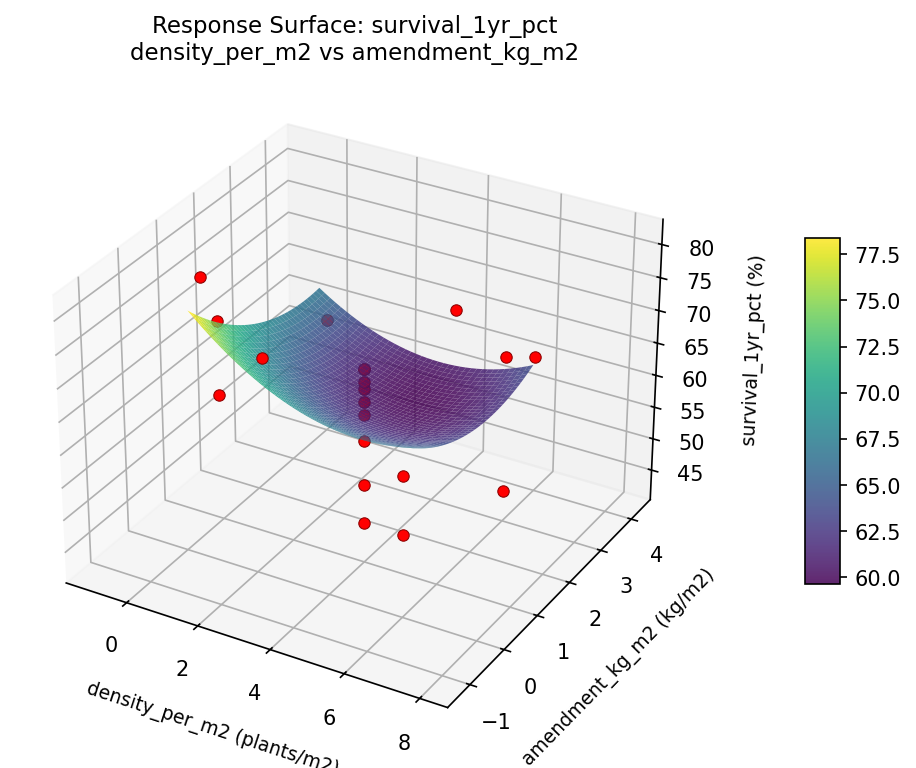

Summary
This experiment investigates mangrove restoration planting. Central composite design to maximize seedling survival and growth by tuning planting density, tidal zone position, and sediment amendment.
The design varies 3 factors: density per m2 (plants/m2), ranging from 1 to 6, tidal zone (zone), ranging from 1 to 3, and amendment kg m2 (kg/m2), ranging from 0 to 3. The goal is to optimize 2 responses: survival 1yr pct (%) (maximize) and height gain cm (cm) (maximize). Fixed conditions held constant across all runs include species = rhizophora, site = estuary.
A Central Composite Design (CCD) was selected to fit a full quadratic response surface model, including curvature and interaction effects. With 3 factors this produces 22 runs including center points and axial (star) points that extend beyond the factorial range.
Quadratic response surface models were fitted to capture potential curvature and factor interactions. The RSM contour plots below visualize how pairs of factors jointly affect each response.
Key Findings
For survival 1yr pct, the most influential factors were tidal zone (37.1%), amendment kg m2 (32.8%), density per m2 (30.1%). The best observed value was 81.0 (at density per m2 = 6, tidal zone = 3, amendment kg m2 = 0).
For height gain cm, the most influential factors were tidal zone (40.0%), density per m2 (36.3%), amendment kg m2 (23.7%). The best observed value was 38.0 (at density per m2 = 6, tidal zone = 1, amendment kg m2 = 0).
Recommended Next Steps
- Run confirmation experiments at the predicted optimal settings to validate the model.
- Consider whether any fixed factors should be varied in a future study.
Experimental Setup
Factors
| Factor | Low | High | Unit |
|---|
density_per_m2 | 1 | 6 | plants/m2 |
tidal_zone | 1 | 3 | zone |
amendment_kg_m2 | 0 | 3 | kg/m2 |
Fixed: species = rhizophora, site = estuary
Responses
| Response | Direction | Unit |
|---|
survival_1yr_pct | ↑ maximize | % |
height_gain_cm | ↑ maximize | cm |
Configuration
{
"metadata": {
"name": "Mangrove Restoration Planting",
"description": "Central composite design to maximize seedling survival and growth by tuning planting density, tidal zone position, and sediment amendment"
},
"factors": [
{
"name": "density_per_m2",
"levels": [
"1",
"6"
],
"type": "continuous",
"unit": "plants/m2"
},
{
"name": "tidal_zone",
"levels": [
"1",
"3"
],
"type": "continuous",
"unit": "zone"
},
{
"name": "amendment_kg_m2",
"levels": [
"0",
"3"
],
"type": "continuous",
"unit": "kg/m2"
}
],
"fixed_factors": {
"species": "rhizophora",
"site": "estuary"
},
"responses": [
{
"name": "survival_1yr_pct",
"optimize": "maximize",
"unit": "%"
},
{
"name": "height_gain_cm",
"optimize": "maximize",
"unit": "cm"
}
],
"settings": {
"operation": "central_composite",
"test_script": "use_cases/256_mangrove_restoration/sim.sh"
}
}
Experimental Matrix
The Central Composite Design produces 22 runs. Each row is one experiment with specific factor settings.
| Run | density_per_m2 | tidal_zone | amendment_kg_m2 |
|---|
| 1 | 3.5 | 2 | 1.5 |
| 2 | 6 | 1 | 3 |
| 3 | 1 | 3 | 0 |
| 4 | 3.5 | 3.82574 | 1.5 |
| 5 | 3.5 | 2 | 1.5 |
| 6 | -1.06435 | 2 | 1.5 |
| 7 | 3.5 | 2 | -1.23861 |
| 8 | 3.5 | 2 | 1.5 |
| 9 | 6 | 3 | 0 |
| 10 | 8.06435 | 2 | 1.5 |
| 11 | 3.5 | 2 | 1.5 |
| 12 | 3.5 | 0.174258 | 1.5 |
| 13 | 3.5 | 2 | 1.5 |
| 14 | 1 | 1 | 3 |
| 15 | 3.5 | 2 | 1.5 |
| 16 | 6 | 1 | 0 |
| 17 | 3.5 | 2 | 4.23861 |
| 18 | 6 | 3 | 3 |
| 19 | 3.5 | 2 | 1.5 |
| 20 | 1 | 1 | 0 |
| 21 | 1 | 3 | 3 |
| 22 | 3.5 | 2 | 1.5 |
Step-by-Step Workflow
1
Preview the design
$ python doe.py info --config use_cases/256_mangrove_restoration/config.json
2
Generate the runner script
$ python doe.py generate --config use_cases/256_mangrove_restoration/config.json \
--output use_cases/256_mangrove_restoration/results/run.sh --seed 42
3
Execute the experiments
$ bash use_cases/256_mangrove_restoration/results/run.sh
4
Analyze results
$ python doe.py analyze --config use_cases/256_mangrove_restoration/config.json
5
Get optimization recommendations
$ python doe.py optimize --config use_cases/256_mangrove_restoration/config.json
6
Generate the HTML report
$ python doe.py report --config use_cases/256_mangrove_restoration/config.json \
--output use_cases/256_mangrove_restoration/results/report.html
Features Exercised
| Feature | Value |
|---|
| Design type | central_composite |
| Factor types | continuous (all 3) |
| Arg style | double-dash |
| Responses | 2 (survival_1yr_pct ↑, height_gain_cm ↑) |
| Total runs | 22 |
Analysis Results
Generated from actual experiment runs using the DOE Helper Tool.
Response: survival_1yr_pct
Top factors: tidal_zone (37.1%), amendment_kg_m2 (32.8%), density_per_m2 (30.1%).
Pareto Chart

Main Effects Plot

Response: height_gain_cm
Top factors: tidal_zone (40.0%), density_per_m2 (36.3%), amendment_kg_m2 (23.7%).
Pareto Chart

Main Effects Plot

Response Surface Plots
3D surfaces fitted with quadratic RSM. Red dots are observed data points.
height gain cm density per m2 vs amendment kg m2

height gain cm density per m2 vs tidal zone

height gain cm tidal zone vs amendment kg m2

survival 1yr pct density per m2 vs amendment kg m2

survival 1yr pct density per m2 vs tidal zone

survival 1yr pct tidal zone vs amendment kg m2

Full Analysis Output
RSM surface: rsm_survival_1yr_pct_density_per_m2_vs_tidal_zone.png
RSM surface: rsm_survival_1yr_pct_density_per_m2_vs_amendment_kg_m2.png
RSM surface: rsm_survival_1yr_pct_tidal_zone_vs_amendment_kg_m2.png
RSM surface: rsm_height_gain_cm_density_per_m2_vs_tidal_zone.png
RSM surface: rsm_height_gain_cm_density_per_m2_vs_amendment_kg_m2.png
RSM surface: rsm_height_gain_cm_tidal_zone_vs_amendment_kg_m2.png
=== Main Effects: survival_1yr_pct ===
Factor Effect Std Error % Contribution
--------------------------------------------------------------
tidal_zone 24.0000 2.0610 37.1%
amendment_kg_m2 21.2500 2.0610 32.8%
density_per_m2 19.5000 2.0610 30.1%
=== Summary Statistics: survival_1yr_pct ===
density_per_m2:
Level N Mean Std Min Max
------------------------------------------------------------
-1.06435 1 74.0000 0.0000 74.0000 74.0000
1 4 67.7500 6.2383 64.0000 77.0000
3.5 12 62.0833 9.6433 43.0000 81.0000
6 4 56.5000 9.3986 45.0000 66.0000
8.06435 1 76.0000 0.0000 76.0000 76.0000
tidal_zone:
Level N Mean Std Min Max
------------------------------------------------------------
0.174258 1 43.0000 0.0000 43.0000 43.0000
1 4 59.2500 9.6393 45.0000 66.0000
2 12 65.4167 8.7226 49.0000 81.0000
3 4 65.0000 9.8319 53.0000 77.0000
3.82574 1 67.0000 0.0000 67.0000 67.0000
amendment_kg_m2:
Level N Mean Std Min Max
------------------------------------------------------------
-1.23861 1 81.0000 0.0000 81.0000 81.0000
0 4 64.5000 9.9499 53.0000 77.0000
1.5 12 62.5000 9.5108 43.0000 76.0000
3 4 59.7500 9.8784 45.0000 66.0000
4.23861 1 64.0000 0.0000 64.0000 64.0000
=== Main Effects: height_gain_cm ===
Factor Effect Std Error % Contribution
--------------------------------------------------------------
tidal_zone 19.0000 1.5771 40.0%
density_per_m2 17.2500 1.5771 36.3%
amendment_kg_m2 11.2500 1.5771 23.7%
=== Summary Statistics: height_gain_cm ===
density_per_m2:
Level N Mean Std Min Max
------------------------------------------------------------
-1.06435 1 29.0000 0.0000 29.0000 29.0000
1 4 24.0000 3.9158 19.0000 28.0000
3.5 12 22.3333 7.8663 7.0000 33.0000
6 4 20.7500 6.7020 14.0000 27.0000
8.06435 1 38.0000 0.0000 38.0000 38.0000
tidal_zone:
Level N Mean Std Min Max
------------------------------------------------------------
0.174258 1 7.0000 0.0000 7.0000 7.0000
1 4 21.0000 4.3970 16.0000 26.0000
2 12 25.1667 7.5418 7.0000 38.0000
3 4 23.7500 6.5511 14.0000 28.0000
3.82574 1 26.0000 0.0000 26.0000 26.0000
amendment_kg_m2:
Level N Mean Std Min Max
------------------------------------------------------------
-1.23861 1 33.0000 0.0000 33.0000 33.0000
0 4 21.7500 6.4485 14.0000 28.0000
1.5 12 23.1667 8.7681 7.0000 38.0000
3 4 23.0000 4.9666 16.0000 27.0000
4.23861 1 24.0000 0.0000 24.0000 24.0000
Pareto chart (survival_1yr_pct): use_cases/256_mangrove_restoration/results/analysis/pareto_survival_1yr_pct.png
Pareto chart (height_gain_cm): use_cases/256_mangrove_restoration/results/analysis/pareto_height_gain_cm.png
Main effects (survival_1yr_pct): use_cases/256_mangrove_restoration/results/analysis/main_effects_survival_1yr_pct.png
Main effects (height_gain_cm): use_cases/256_mangrove_restoration/results/analysis/main_effects_height_gain_cm.png
Optimization Recommendations
=== Optimization: survival_1yr_pct ===
Direction: maximize
Best observed run: #2
density_per_m2 = 6
tidal_zone = 3
amendment_kg_m2 = 0
Value: 81.0
RSM Model (linear, R² = 0.1764, Adj R² = 0.0392):
Coefficients:
intercept +63.2727
density_per_m2 +2.6766
tidal_zone -3.2521
amendment_kg_m2 -2.4220
RSM Model (quadratic, R² = 0.5163, Adj R² = 0.1535):
Coefficients:
intercept +63.5754
density_per_m2 +2.6766
tidal_zone -3.2521
amendment_kg_m2 -2.4220
density_per_m2*tidal_zone +3.3750
density_per_m2*amendment_kg_m2 -6.8750
tidal_zone*amendment_kg_m2 -4.8750
density_per_m2^2 -0.5013
tidal_zone^2 -0.2013
amendment_kg_m2^2 +0.2487
Curvature analysis:
density_per_m2 coef=-0.5013 concave (has a maximum)
amendment_kg_m2 coef=+0.2487 convex (has a minimum)
tidal_zone coef=-0.2013 concave (has a maximum)
Notable interactions:
density_per_m2*amendment_kg_m2 coef=-6.8750 (antagonistic)
tidal_zone*amendment_kg_m2 coef=-4.8750 (antagonistic)
density_per_m2*tidal_zone coef=+3.3750 (synergistic)
Predicted optimum (from quadratic model):
density_per_m2 = 6
tidal_zone = 3
amendment_kg_m2 = 0
Predicted value: 80.0930
Model quality: Moderate fit — use predictions directionally, not precisely.
Factor importance:
1. tidal_zone (effect: 13.8, contribution: 39.9%)
2. density_per_m2 (effect: 10.5, contribution: 30.4%)
3. amendment_kg_m2 (effect: 10.2, contribution: 29.7%)
=== Optimization: height_gain_cm ===
Direction: maximize
Best observed run: #12
density_per_m2 = 6
tidal_zone = 1
amendment_kg_m2 = 0
Value: 38.0
RSM Model (linear, R² = 0.3222, Adj R² = 0.2092):
Coefficients:
intercept +23.3636
density_per_m2 +2.0129
tidal_zone -3.5780
amendment_kg_m2 -2.8962
RSM Model (quadratic, R² = 0.4701, Adj R² = 0.0727):
Coefficients:
intercept +23.5084
density_per_m2 +2.0129
tidal_zone -3.5780
amendment_kg_m2 -2.8962
density_per_m2*tidal_zone +2.6250
density_per_m2*amendment_kg_m2 -3.1250
tidal_zone*amendment_kg_m2 -1.3750
density_per_m2^2 -0.8724
tidal_zone^2 +0.3276
amendment_kg_m2^2 +0.3276
Curvature analysis:
density_per_m2 coef=-0.8724 concave (has a maximum)
amendment_kg_m2 coef=+0.3276 convex (has a minimum)
tidal_zone coef=+0.3276 convex (has a minimum)
Notable interactions:
density_per_m2*amendment_kg_m2 coef=-3.1250 (antagonistic)
density_per_m2*tidal_zone coef=+2.6250 (synergistic)
tidal_zone*amendment_kg_m2 coef=-1.3750 (antagonistic)
Predicted optimum (from linear model):
density_per_m2 = 6
tidal_zone = 1
amendment_kg_m2 = 0
Predicted value: 31.8507
Model quality: Weak fit — consider adding center points or using a different design.
Factor importance:
1. tidal_zone (effect: 11.8, contribution: 39.5%)
2. amendment_kg_m2 (effect: 9.2, contribution: 31.1%)
3. density_per_m2 (effect: 8.8, contribution: 29.4%)